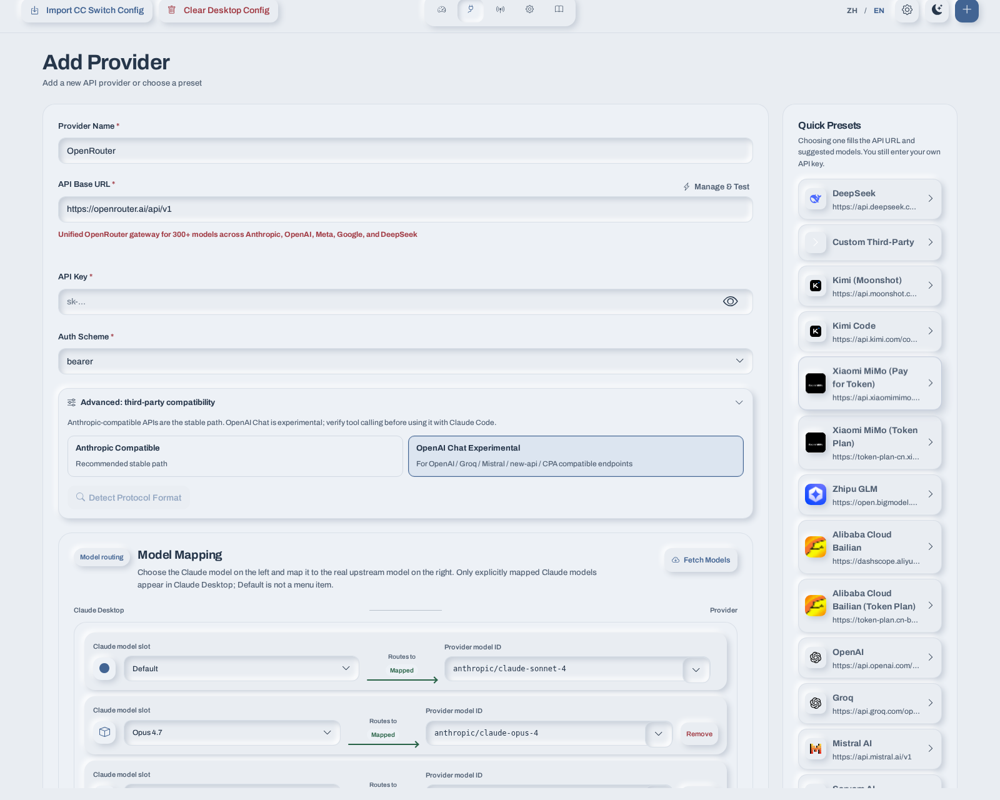

01
Bring your provider
Start with a built-in preset or enter a compatible endpoint. Your provider account and API key remain yours.
Provider choice, made visible
A local desktop companion
Junction helps you connect Claude Desktop to the API providers you choose, then make every model route easy to see and adjust.
Windows and macOS · Latest release

A local view of every model route
A calmer way to configure
Choose a provider, add your own API key, and map the model names Claude Desktop uses to the IDs your provider supports. Junction applies those settings locally, with no account or cloud sync.
Explore the projectStart with a built-in preset or enter a compatible endpoint. Your provider account and API key remain yours.
See the Claude Desktop model slots beside the upstream model IDs they use. Change one route without losing sight of the rest.
Provider settings are stored in Junction's local configuration. An optional local gateway handles model mapping and supported API-format adaptation.
Three steps, then back to work
Pick a preset or add a compatible API endpoint and your own key.
Pair Claude Desktop's model slots with the IDs your provider serves.
Apply the configuration, then restart Claude Desktop to load it.
Choose your build
Latest release
64-bit · Installer
Apple silicon · Installer
Intel · Installer
Downloads are provided through GitHub Releases. See the release notes and verify checksums before installing if you need to confirm a file's integrity.

Open source · Local configuration